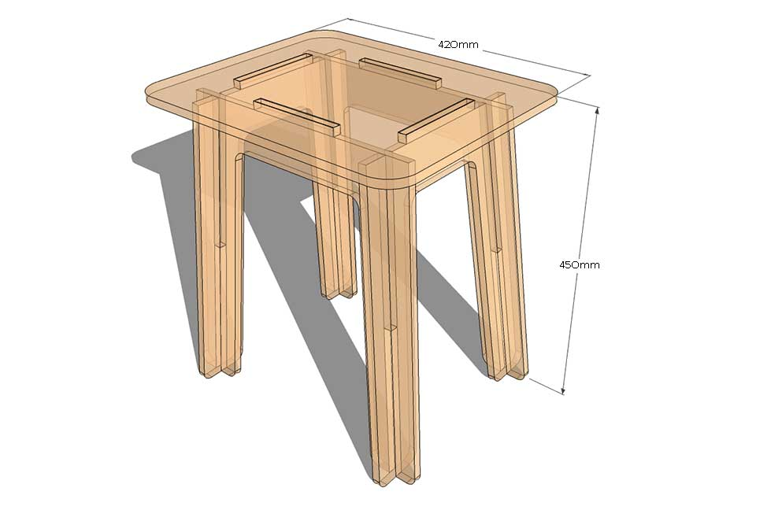
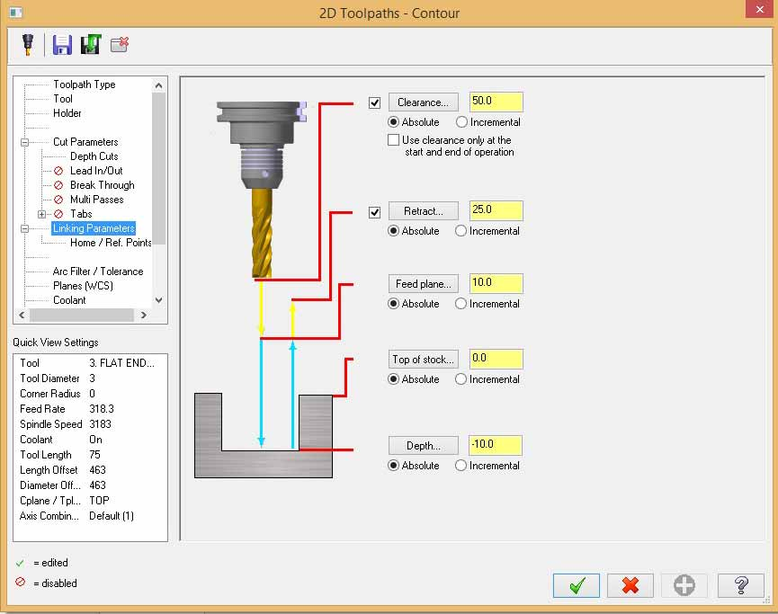
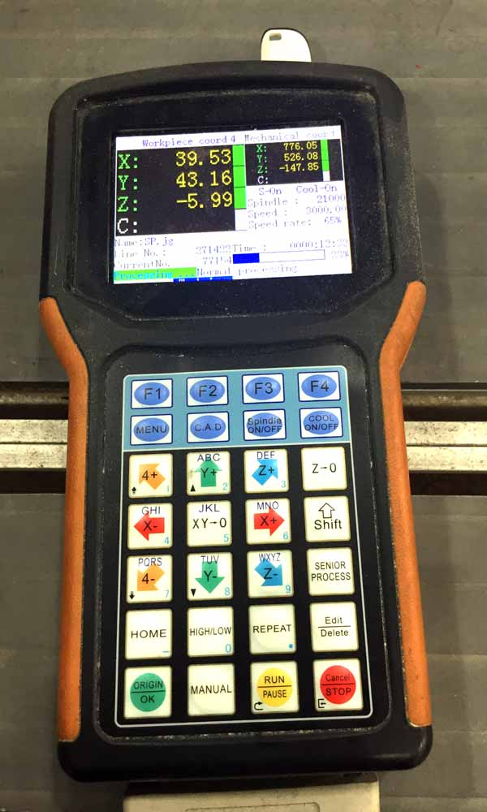

This topic, make something big, seems extremely open-ended and free-to-explore. I was told by the local instructor, that we need to use computer to generate the design, and we are not supposed to use nails, screws or glue to put the parts together. Because there is such a restriction, I cannot just make something simply using a table saw or bend saw from the wood workshop. I have decided to make something simple, a stool. Below are some ideas I have found on the internet.
I recalled having a hard time in week 3 trying to draw a parametric 2D design for the laser cutter. This week's assignment is quite similar to that. But by now, I have forgotten most of the things I learned about inventor and inkscape. And the most difficult issue I faced was how to derive the precision in measuring and drawing the design so that when the pieces are put together they can fit nicely. That was too mind-boggling for me, and I have difficulty imagining 2D and 3D models. There were not much instructional videos on making digital fabrication joints with precisions. Here are some guides and tutorials I found useful.
Initially, I had thought of making a folding stool but I quickly gave up the idea because it was too complicated for my brains. I decided on a simple and plain stool.I have decided to pick this design and try to replicate it.
These are the measurement I have planned out:

The reason why I used inkscape to craft my chair was because I was unfamiliar with Inventor. I have forgotten a lot of what I've learnt from tutorial videos back in week 1 and 2. A classmate suggested using sketchup. I tried for a while and gave up too. I was really having mental block and couldn't figure out how to draw something so simple.
Inkscape was comparatively easier. So I tried doing it and was able to make all legs. However, I got stuck again and couldn't figure out how to measure out the 4 slots on the seat accurately. It was not helpful that I do not have experience as a designer or engineer. If I could have someone help me step through the thinking process, I would be able to learn faster.
Because I was running out of time, I could not spend time on designing, so I have decided to move on and fall back on the design file that was made available on the website where I downloaded the design. I used that as the base to adjust the thickness and joint cuts.
The CNC router we have in Fablab @ SP is the SK2020. We are using 8 x 4 feet plywood for our project. Thickness of the material is 11.7mm. A simple fitting test done by my classmate shows that 11.5mm would be a good press-fit setting to use.
I was neither familiar in using MasterCam to finetune and simulate the routing process nor operating the SK2020 CNC router. Many thanks to my colleague, Tham, for his invaluable help on this week's assignment.
Generating Toolpath:
 
I forgot to make the dog-bone edges in the slot of the seat, and ended up having to chisel off about 2mm of each of the sides of the joints to fit the slot. I was not satisfied with the way things turned out this week, but I sure know more of myself and have a better understanding of my weaknesses. I really hope I can revisit this topic again after I'm done with the course, to work on where I was lacking. For now, I have to leave this as it is and move on.